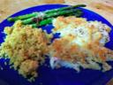

<!--#include virtual="header.html" -->
<div align="center">
<ul class="gallery">
        <li><a href="http://www.food.com/recipe/4-minute-spicy-garlic-shrimp-107997"></a><br>Garlic Shrimp</li>
        <li><a href="http://www.myrecipes.com/recipe/so-easy-paella-10000001553059/"></a><br>Paella</li>
        <li><a href="http://www.famouschilirecipes.com/CrockpotChili.html"></a><br>Turkey Chili
        </li>
        <li><a href="http://www.foodnetwork.com/recipes/emeril-lagasse/chicken-marsala-recipe/index.html"></a><br>Chicken Marsala</li>
        <li><a href="http://simplyrecipes.com/recipes/moqueca_-_brazilian_fish_stew/"></a>
        <br>Moqueca</li><br>
        <li><a href="http://www.inerikaskitchen.com/2010/04/banana-chocolate-chip-bread-pudding.html"></a><br>Bread Pudding</li>
        <li><a href="http://www.foodandwine.com/recipes/baked-flounder-with-parmesan-crumbs"></a><br>Baked Flounder</li>
        <li><a href="http://www.opensourcefood.com/people/b97369/recipes/french-crepe"></a><br>Crepes</li>
</ul>
<!--#include virtual="footer.html" -->